3 screens
Your console plus two game displays
Put two singers on each TV or projector, or all four on one. Every display keeps its place and size for the next party. Only one screen? The game then plays right in the DJ window.
Ultrastar DJ turns your laptop into a karaoke DJ booth.
Up to four singers on up to two big screens.
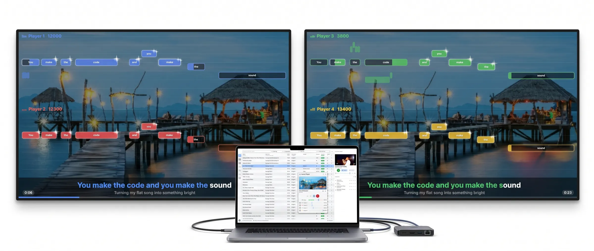
Put two singers on each TV or projector, or all four on one. Every display keeps its place and size for the next party. Only one screen? The game then plays right in the DJ window.
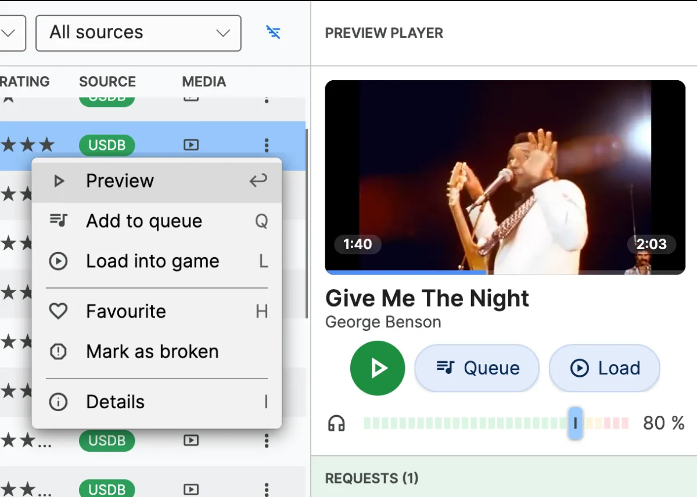
The preview player has its own audio output. Check the next song on your headphones while the game plays on the big speakers.
No app to install. Guests scan the code, search all your songs and send a request — over Wi-Fi or mobile data, with an optional party PIN.
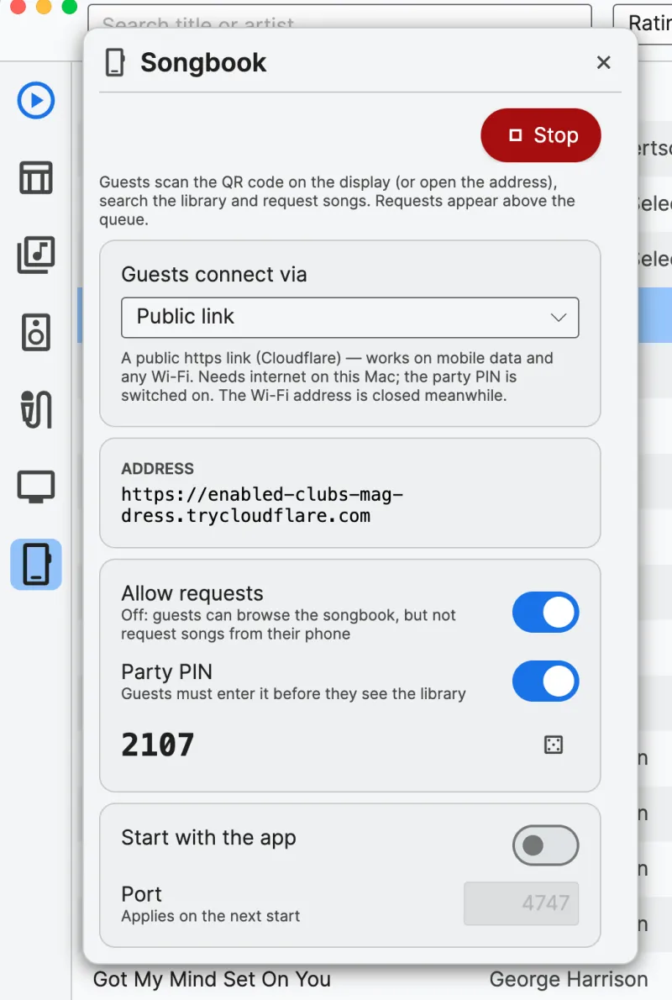
Start the songbook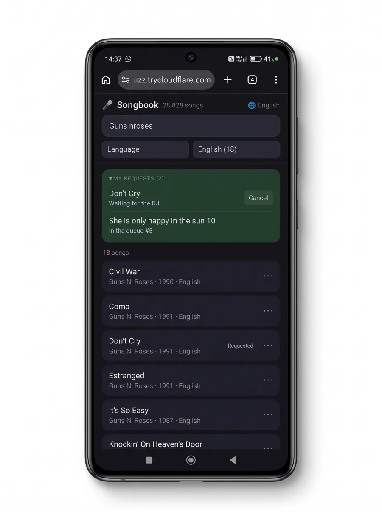
They search and request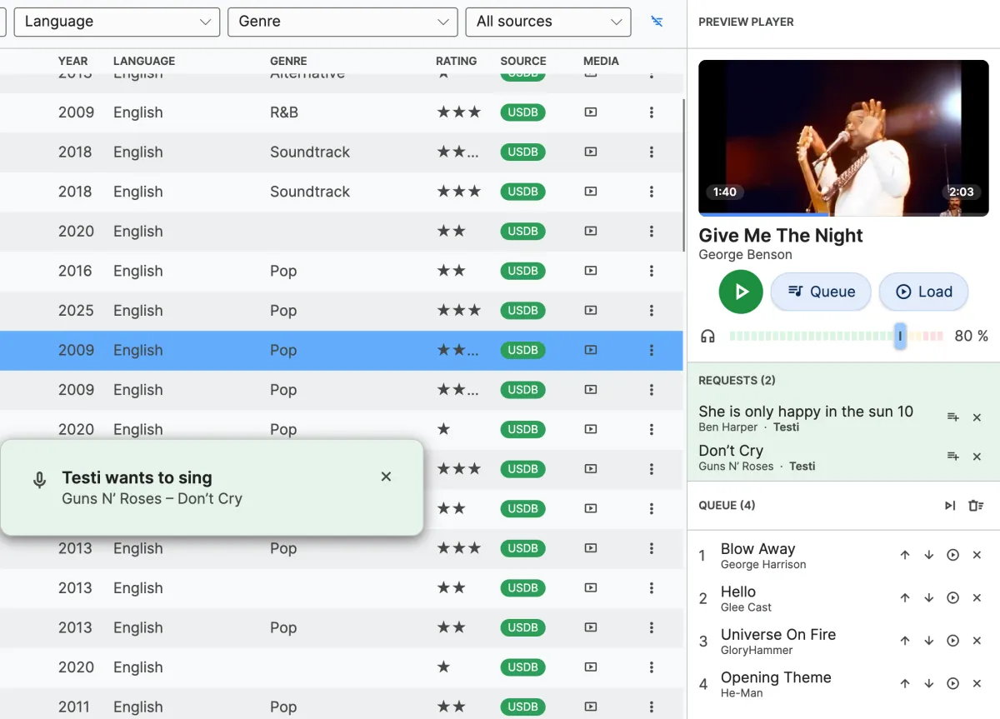
The request appears next to your queue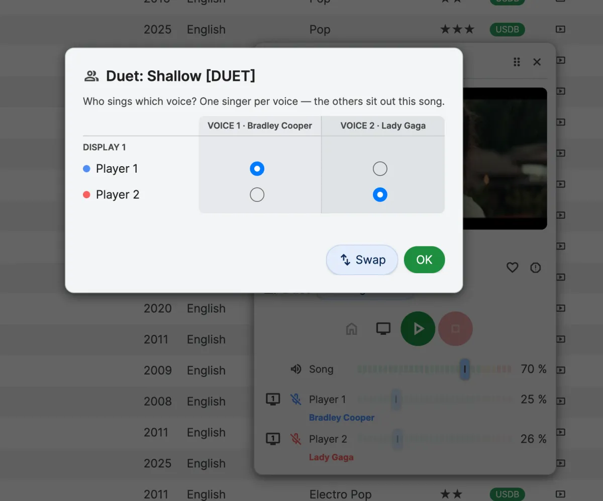
Songs written as duets (marked [DUET]) give each voice its own part. Choose who sings which voice, or let one singer take both.
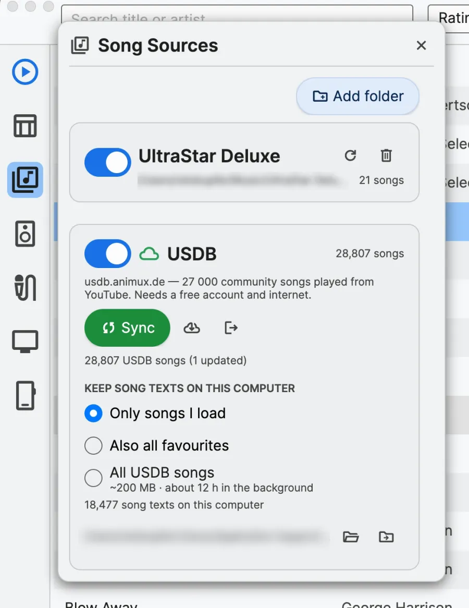
Sign in with a free USDB account and search 28,000 community songs right away. Your own UltraStar folders work too.
#TITLE:Lets Ultrastar
#ARTIST:Gemini
#BPM:300
#GAP:6000
#VIDEO:https://youtu.be/…
: 0 4 9 You
: 5 4 9 make
: 10 3 7 the
* 14 8 12 code
ENotes and lyrics come from a small UltraStar text file. If it has a YouTube link, music and video play straight from YouTube — no files to collect.
Classic UltraStar songs work too: MP3 or other audio files, with or without a video (MP4, MKV, AVI and more).
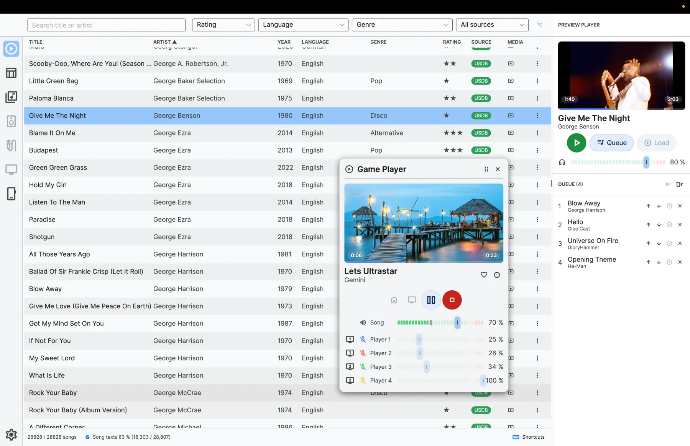
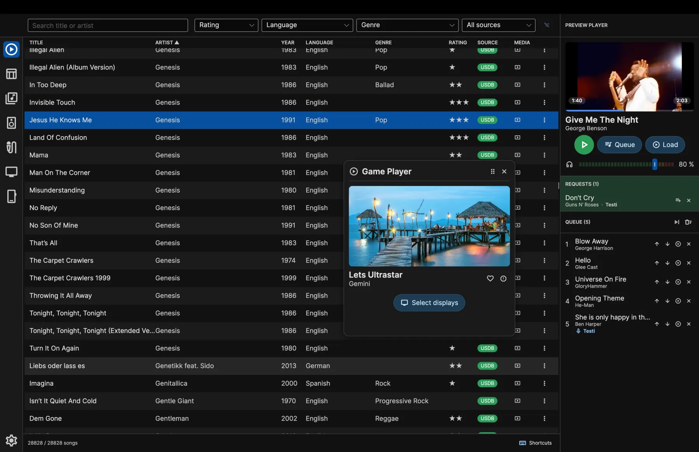
The DJ console comes in light and dark mode. Drag the line to compare.
The DJ console comes in 13 languages, and the songbook opens on every guest's phone in their own language.
Set up once — the app remembers everything for the next party.
Add your UltraStar folders, or sign in to USDB.
One output for the game, one for your headphones.
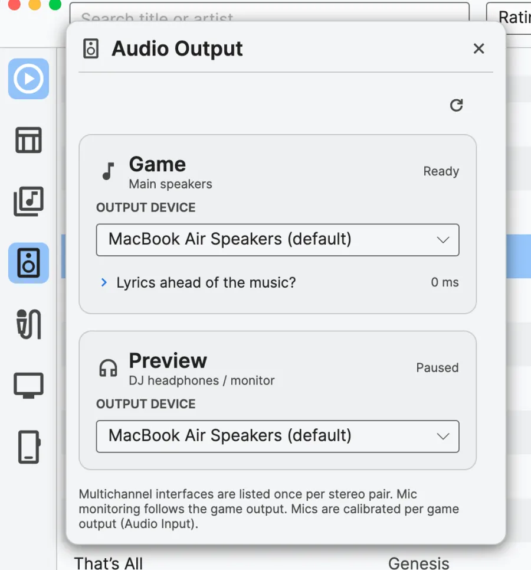
Assign a microphone to each player, then press Calibrate to measure its delay with the game speakers — so every note is scored fairly, even over Bluetooth.
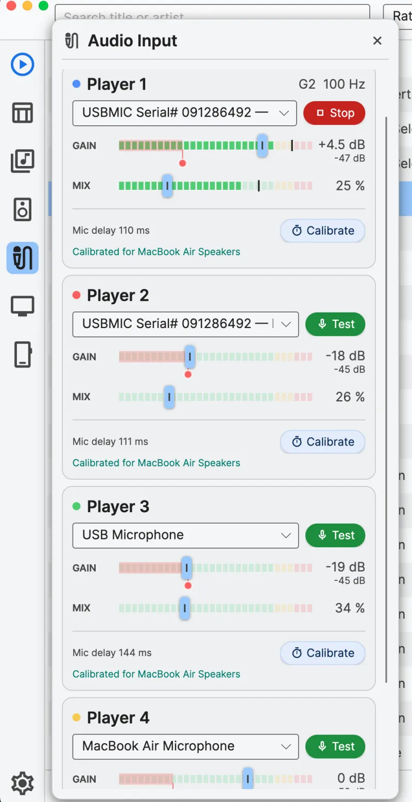
Choose who sings on which display, open it and drag the window onto the TV or projector, then Fullscreen.
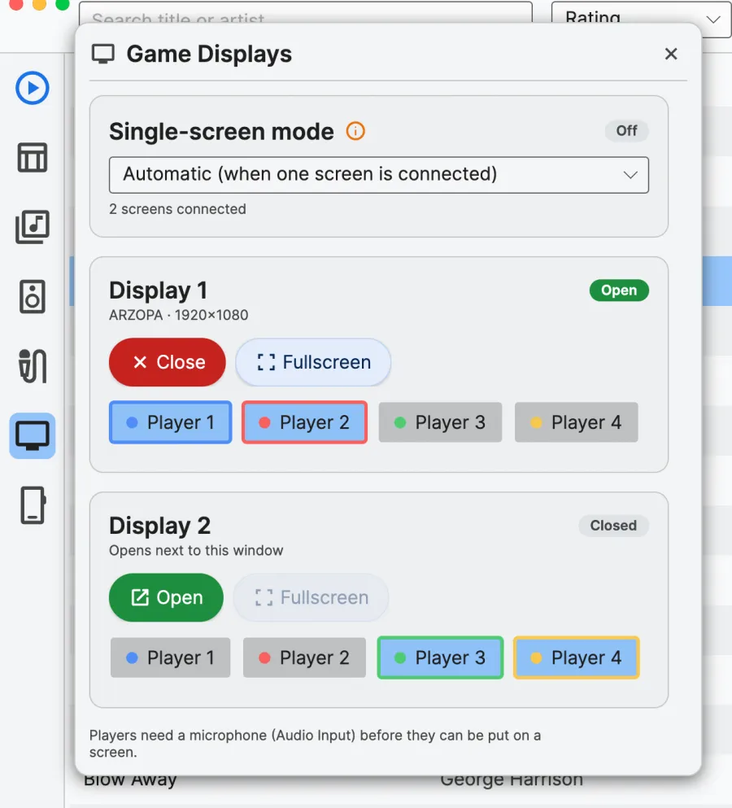
Listen to a song on your headphones before you play it.
Queue songs, or take the guests' requests.
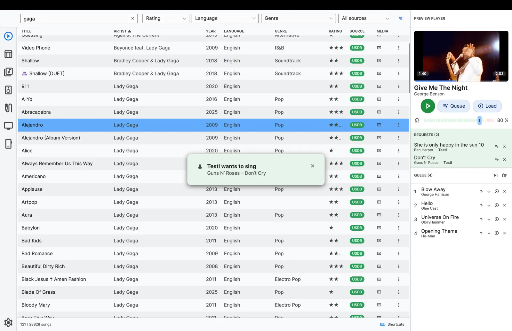
Load the song into the Game Player and press play — 3, 2, 1, sing.
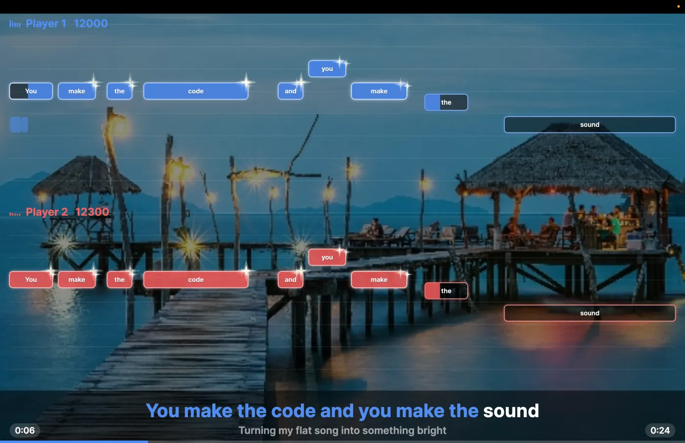
Version 0.9.0 beta 1 · free · the app updates itself after that.
Ultrastar DJ is in beta. Something broken, or an idea for the next party? Every report helps. You need a free GitHub account to write one.